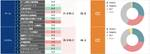

TVer Tech Blog
https://techblog.tver.co.jp/
TVer Tech Blog
フィード
BigQueryのExternal Tableのスキーマ変更に対応する方法の一つ
TVer Tech Blog
TVerでデータシステムの開発・運用をしている黒瀬です。 TVer Advent Calendar 2024の4日目の記事です。 3日目の昨日は @ko-ya346 さんによる 「Terraform + GitHub でデータマート基盤を作った話」 でした。 今日は、BigQueryでExternal Tableのスキーマ変更に対応する方法の一つについてご紹介いたします。 サマリ BigQueryのExternal Tableをスキーマごとにバージョン分けし、それを包含するviewを作成することで、データのスキーマ変更にも対応しやすくなります。 背景と課題 弊社のデータシステムでは、データをG…
5日前
Terraform + GitHub でデータマート基盤を作った話
TVer Tech Blog
こんにちは。TVer でデータ分析をしている高橋です。 こちらは TVer Advent Calendar 2024 の3日目の記事です。 2日目の記事は @takanamito さんの connect-goでHTTP GETリクエストを受け取る でした。 この記事では分析環境を効率化するために弊社で活用している、Terraform と GitHub を使ったデータマート基盤をご紹介します。 開発のきっかけ これまで分析業務は、データレイクに集約された生ログを都度前処理し、個別の集計作業を行っていました。クエリ作成のたびに手作業でロジックを組み立てるか過去のクエリからロジックをコピペするような…
6日前

TVerにおける技術統括事務局の取り組み
TVer Tech Blog
この記事はTVer アドベントカレンダー 2024 1日目の記事です。 どうも、TVerでEngineering Managerをしてる 高橋 @ukitaka といいます。 アドベントカレンダー初日のこの記事ではTVerのプロダクトや組織がどんな状況に置かれていて、どんな課題に向き合い、それらをどう解決していこうとしているのかついて俯瞰的に書いてみようと思います。 結果としてこの1年でどうエンジニア組織が変化したのか？については 最終日に技術統括の脇阪さんに熱く語ってもらう予定なのでお楽しみに！ “技術統括事務局” について この1年でTVerは内製開発のための体制が整い、社内でいくつかの開…
8日前

TVerにバックエンドエンジニアとして中途入社した最初の3ヶ月
TVer Tech Blog
はじめまして。id:takanamitoです。 バックエンドエンジニアとしてTVerに入社して3ヶ月が経ちました。 TVerに入ってみて感じたこと、開発組織が何に取り組んでいるのか書いてみようと思います。 TVerのオンボーディング ドキュメントをたくさん書く文化を広める たくさん質問・相談する TVerが取り組んでいる開発とは この先やりたいこと
2ヶ月前
TVerはDroidKaigi 2024に協賛します
TVer Tech Blog
こんにちは、TVerでAndroidエンジニアをしている石井です。 株式会社TVerはDroidKaigi 2024のサポーターとして協賛することになりました。 DroidKaigiとは DroidKaigiはエンジニアが主役のAndroidカンファレンスです。 今年で10年を迎えるDroidKaigiは、Android技術情報の共有とコミュニケーションを目的に、2024年9月11日(水) - 13日(金)の3日間開催します。(HPより引用) オフライン会場: ベルサール渋谷ガーデン TVerとAndroid TVerは昨年Androidエンジニアが2名入社し、昨年9月頃に完全内製化が完了しま…
3ヶ月前
iOSDC Japan 2024に参加してきました！
TVer Tech Blog
みなさんこんにちは、TVerでEngineering Managerをしている高橋 (@ukitaka) です。 8/22-8/24で開催されたiOSDCに参加してきましたので、 少々遅くなりましたが #iwillblog しておこうかなと思います！ 久しぶりのiOSDCオフライン参加 前夜祭参加組で記念撮影 個人的な話にはなってしまうのですが、iOSDCオフライン参加するのはかなり久しぶりで 2018年に登壇して以来6年ぶりでした。 当時の発表資料 speakerdeck.com もはや界隈から忘れ去られているかもなとドキドキしながら会場入りしたんですが、いろんな方々にお声がけいただいただけ…
3ヶ月前
Backend Enabling Team ができました in TVer
TVer Tech Blog
はじめに こんにちは。TVerでバックエンドエンジニアをやっている伊藤(@kanataxa)です。 TVerをより多くの方に利用していただくために、バックエンドチームでは機能開発と並行して開発サイクルの高速化や品質向上にも取り組んでいます。 その中で2024/7に組織変更が行われ、「開発サイクルにフォーカスする」ことを目的としてEnabling Teamが立ち上げられました。 今回はそのEnabling Teamについてです。 TVerのバックエンドチームの現状と合わせて、これから何をしていくのかを書いていきたいと思います。 TVerのバックエンドチームの現状 バックエンドチームはTVerサー…
4ヶ月前
CloudNativeDaysSummer2024で登壇しました #CNDS2024
TVer Tech Blog
はじめに はじめまして！ TVerのSREチームでオブザーバビリティ推進を担当している鈴木 彩人と申します。 6/15(土)に札幌で開催されたCloudNative Days Summer 2024にて登壇しました！ event.cloudnativedays.jp 本イベントのダイヤモンドスポンサーであるNew Relic様から声をかけていただいたため、貴重な体験ができると思い登壇することにしました。 （弊社では会社の費用でカンファレンスに参加できる非常に良い制度があります） CloudNative Daysについて 公式サイトより引用。 CloudNative Days はコミュニティ、企…
4ヶ月前
TVerはiOSDC Japan 2024に協賛します！
TVer Tech Blog
こんにちは、TVerでエンジニアリングマネージャーをしている高橋 (@ukitaka) です。 TVerは今年もiOSDCに協賛させていただくことになりました！ TVerとiOSエンジニア 昨年のiOSDCの時点では「iOSエンジニアがいなくても泣かない！配信サービスのiOSアプリにおける オブザーバビリティの導入と改善」というタイトルで発表があった通り、TVerにはiOSエンジニアが不在の状況だったのですが、昨年1名iOSエンジニアが入社したところからチームが立ち上がり、今年4月には完全内製化が完了しました。さらに5月には元iOSエンジニア(？)の自分もエンジニアリングマネージャーとしてjo…
5ヶ月前
実務でのテーブル結合時のケア（重複排除など）について
TVer Tech Blog
こんにちは、TVerでデータ分析をしている高橋です。 弊社の分析業務の多くは BigQuery に蓄積されているログを使った分析で、大量のログを扱うため前処理から集計まで全てSQLで行っています。 本記事では、SQLを書く上で特に気を付けているテーブル結合時のケアについて紹介します。 分析業務の一例 「ホーム画面を開いてから10分以内にコンテンツを再生した割合を知りたい」という依頼が来ました1。 この集計は訪問ログと視聴ログを使い、ホーム画面に訪問したログを10分以内に再生した or 再生してないの2種類に分ければできそうです。 ここで、集計に用いるテーブルを簡単に紹介します。 訪問ログ (v…
9ヶ月前
AWS LambdaとSlackを連携してツールを作った話
TVer Tech Blog
こんにちは。 アドテク領域のエンジニアをしています安部です。 こちらは TVer Advent Calendar 2023 の14日目の記事です。 13日目の記事で「ツールを作成した」という話をちらっと書きました。 今回はそのツールについて備忘として書きます。 ツールは作成時は半自動状態(起動トリガーが手動)、12月に全自動化となりました。 ツールを作ったきっかけ ツール作成時の条件 なぜAWS、Lambdaを選んだのか システム構成図 ツールの詳細 ①S3のバケットからファイルを取得 ②SQLの作成 ③RDS接続・確認 ④Slackへ結果を送信 ⑤起動トリガーの設定 全自動化 ①Slack …
1年前
GCP版Dataformで冪等性を担保する設計ポイント3つ
TVer Tech Blog
データエンジニアの遠藤です。 TVer Advent Calendar 2023の24日目の記事になります。 はじめに 本年（2023年）、Google Cloudのビッグデータ基盤として展開されるBigQueryでは、データガバナンスツールであるDataformがGA（Generally Avaialble）になりました。 cloud.google.com このDataformの登場により、BigQuery上でデータを利活用しやすいように変換する（データマートを生成する）システムの構築が容易になりました。 本記事では、Dataform上において、定常実行やリトライ実行を容易にするために、冪等…
1年前
レコメンドエンジンで日本を元気に
TVer Tech Blog
こんにちは、TVer レコメンドエンジン担当の由井です。 こちらは TVer Advent Calendar 2023 の23日目の記事です。 なぜレコメンドなのか？ 今年の5月からTVerにジョインして、レコメンドエンジンの開発に携わらせて頂いていますが、そもそもなぜ自分がレコメンド開発に携わることになったのかや、レコメンドエンジンにかける想いを、初心を忘れないためにも、つらつらと書かせてもらえたらと思います。 ただのポエムですのでイブ前ということで気軽に読んで頂けたらと思います。 ヨーロッパでの再発見 自分は、元々、ヨーロッパの歴史や新しい事を経験する事が好きだったため、あまり計画せずに現…
1年前
URL_PARSE 再発明
TVer Tech Blog
日々、データ分析をしている森藤です。遅くなってしまいすみません。本記事は TVer アドベントカレンダー 17日目の記事です。 (10日の記事も今度書きます) qiita.com TVer のデータを分析の中で大きな割合を占めるものにユーザジャーニーの分析や外部からの流入の分析があります。 これらはどちらも URL の解析が必要になるのですが、 URL はだいたいにおいて Google Analytics の utm パラメタや hash の値が乗っており、 Facebook などは fbclid みたいなのが乗ったりと、これらを削除する作業が必要になります。 具体的には内部の回遊としては、 …
1年前
New Relic Change Trackingを使ってアプリケーションのパフォーマンスが変化した要因を特定しやすくする
TVer Tech Blog
TVer広告事業本部の髙品です。 こちらはTVer Advent Calendar 2023の21日目の記事です。 本記事では、New RelicのChange Trackingという機能について書きたいと思います。 本記事を書く背景 Change Trackingを説明する前に、本記事を書く背景をお話させてください。 私は、2023年11月にTVer広告事業本部のエンジニアチームに参加しました。広告事業本部のエンジニアチームは、主に「TVer」で配信される広告プロダクト「TVer広告」の配信システム・広告周辺領域のシステムを開発・保守しています。TVerのエンジニア組織に関心がある方は、弊社…
1年前
Xcode Cloud 触ってみた
TVer Tech Blog
本記事はTVer Advent Calendar 2023の19日目の記事です。 はじめに こんにちは、TVerでiOSアプリ開発を担当しています小森です。 Xcode Cloudの発表からしばらく経ちましたが、 CI/CDサービスを検討するに当たってXcode Cloudを初めて触ってみましたので、 本記事でXcode Cloudについてのセットアップ方法と、触ってみた感想をまとめたいと思います。 Xcode Cloudを検討されている方の参考になれば幸いです。 Xcode Cloudとは Xcode CloueはAppleが提供するAppleプラットフォームのためのCI/CDサービスです。…
1年前
SnapHelperがどうやってSnappingを実現しているのか
TVer Tech Blog
本記事は TVer Advent Calendar 2023 の20日目の記事です。 はじめに こんにちは、TVerでAndroidアプリ開発をしています石井です。 AndroidViewでコンテンツの一覧などを表示する際にRecyclerViewがよく使われると思いますが、カルーセルのようなUIにするためにはどうすれば良いでしょうか。 一般的にはRecyclerViewにLinearSnapHelperをアタッチすることで、カルーセルのようにコンテンツを中央寄せさせるUIを作ることが可能です。 ただし、LinearSnapHelperはあくまでも中央へのSnappingしか提供していないため…
1年前
ISUCON初挑戦記
TVer Tech Blog
こんにちは、TVerでバックエンドエンジニアをやっている水野です。 こちらは TVer Advent Calendar 2023 の18日目の記事です。 初めてISUCONに挑戦しました。結果は最終スコア0で、悔いが残りますが、次回ISUCON14（開催未定）に向けての備忘録として振り返ります。 参加までの流れ 当日やったこと 会社からのサポート 来年への抱負 参加までの流れ 私がISUCON13に参加したきっかけは、ISUCON夏祭りへの参加でした。 techblog.tver.co.jp ISUCON夏祭りのハンズオンでprivate-isuを解いたり、トークセッションで先人たちの戦略を聞…
1年前
Media-JAWS にて登壇しました #jawsug #mediajaws
TVer Tech Blog
本記事はTVer Advent Calendar 2023の15日目の記事です。 はじめに こんにちは。去年も15日目の記事を書いていたバックエンドエンジニアの伊藤です。 11/15にInterBEEに合わせて海浜幕張で開催されたMedia-JAWSにて初の登壇をしてきました。 ということで今年は登壇ブログを書いていきたいと思います。 media-jaws.doorkeeper.jp Media-JAWSとは 以下、公式サイトからの引用です。 Media-JAWSは、例えば急激なトラフィック処理や映像や画像のワークロード処理、セキュリティ対策など、放送・ラジオ・新聞・雑誌・Web・SNSなどの…
1年前
私とAWSと2023年
TVer Tech Blog
こんにちは。アドテク領域のエンジニアをしています安部です。こちらは TVer Advent Calendar 2023 の13日目の記事です。 個人的に今年はAWSに縁があった年でしたのでAWSにからめて1年を振り返ります。 1月〜3月 フロントエンド開発をがんばっていました。(いきなりAWSじゃない！)OCJP Silver取ったりしてました。(バックエンド！)開発業務専門でAWSをどう使っているか、どうデプロイされているのかはあまり気にしていませんでした。転機になったのは3月にログのアラートをslackに連携したいという話が出てきて、CloudWatch LogsとLambdaを使用してs…
1年前
New Relicをフルに活用するためにデータ量とコストに気を配る
TVer Tech Blog
こんにちは、TVerの加我です。 こちらは TVer Advent Calendar 2023 と New Relic 使ってみた情報をシェアしよう！ by New Relic Advent Calendar 2023 の8日目の記事です。 みなさまNew Relicを活用していますか？サービスの信頼性を担保していますか？オブザーバビリティの導入・実現に向けてNew Relicを使い倒していますか？ New Relicは非常に高機能なオブザーバビリティプラットフォームです。TVerではフロントエンドからバックエンドまでNew Relicを活用した横断的な観測を行っています。しかしNew Rel…
1年前
BigQueryのNULLの扱いまとめ
TVer Tech Blog
こんにちは、TVerでデータ分析をしている高橋です。 こちらは TVer Advent Calendar 2023 の12日目の記事です。 弊社の分析業務は、主にBigQueryに蓄積されたデータを対象としています。データ処理の効率を向上させるため、データの前処理から集計までを一貫してSQLクエリで実施しています。この過程でNULL値の取り扱いは避けて通れない重要なテーマとなっています。 この記事では、（直近タスクでNULL含む処理の検証に多くの時間を溶かした筆者が）弊社で頻繁に使用されるSQLクエリの処理においてNULLがどのように扱われるかをまとめたのでご紹介します。 チートシート 今回調…
1年前
Inter BEE 2023 参加レポート & Media-JAWSを開催しました #interbee #mediajaws
TVer Tech Blog
こんにちは、TVerの加我です。 こちらは TVer Advent Calendar 2023 の4日目の記事です。 先日Inter BEE 2023に併せてMedia-JAWSを開催しましたのでそちらのレポートになります。 昨年のレポートはこちら。 techblog.tver.co.jp Inter BEE 2023 今年は11/15 - 11/17にかけて幕張メッセで開催されました。Inter BEE自体の説明については昨年のレポートをご覧ください。 会場 昨年は予備知識というか業界知識がゼロの状態で参加したので展示を見ても何が何やらという状態でしたが、今年は多少なりとも知識があったので展…
1年前
#ISUCON13 に パカパカアルパカとして参加して22位でフィニッシュでした！(86,322点)
TVer Tech Blog
こんにちは！ こちらは TVer Advent Calendar 2023 の2日目の記事です。 TVerのサービスバックエンドのリードエンジニアをやっております内海です🐶！ 今年も昨年同様、チーム：パカパカアルパカとして出場してきました。 isucon.net 22位 86,322 パカパカアルパカ いえーい🎉 やったこと 担当範囲 基本、私はいつもアプリケーションレイヤーばかりみています。 toritori0318氏がインフラをメインに担当。 teraken氏がツール周りと遊撃担当。 開始直後 AWS上のリソース構築 レギュレーション、マニュアルの読み合わせ リソース構築完了後 初回ベンチ…
1年前
「TVer Advent Calendar 2023」開催のお知らせ
TVer Tech Blog
こんにちは、TVerの加我です。 昨年に引き続き今年もTVer Advent Calendarを開催します！ こちらはTVer Advent Calendar 2023 の1日目の記事となります。 qiita.com 昨年のはこちら。 qiita.com 今年のアドベントカレンダーに向けて 現在のTVerは下記のような組織体制となっております。 全体の組織図 speakerdeck.com その中でサービスの開発に携わっている部門 ≒ 開発組織は主に下記が挙げられます。 TVerの開発・運用を担っているサービスプロダクト本部 TVer広告プラットフォームの開発・運用を担っている広告事業本部 昨…
1年前
JAWS Festa 2023参加レポート #jawsug #jawsfesta #jawsfesta2023
TVer Tech Blog
こんにちは、TVerの加我です。 先日10/7に福岡で開催されたJAWS Festa 2023 in Kyushuに企業サポーター兼当日スタッフとして参加してきました。コミュニティというキーワードに着目しつつ写真多めでレポートしていきます。 アンバサダーである広告事業本部の安部がJAWS Festa 2023の応援ブログと現地参加レポートを投稿してくれていますので先にご紹介します。 techblog.tver.co.jp techblog.tver.co.jp JAWS Festaについて JAWS-UGには大きな年次イベントが2つありまして、それがJAWS DAYSとJAWS Festaです…
1年前
JAWS Festa 2023 に参加しました！
TVer Tech Blog
こんにちは。アドテク領域のエンジニアをしています安部です。 10月7日に開催されたJAWS Festa 2023に参加してきました。 jft2023.jaws-ug.jp JAWS Festa 2023には企業サポーターとして参加しました。 参加の意気込みについてはこちらを御覧ください。 techblog.tver.co.jp 当日の会場の様子 会場の福岡工業大学。駅直結でアクセスがとてもよかったです。 企業サポーターブースではラバーコースターを置いていました。 他の企業のアンバサダーさんたちとたくさんお話できて楽しかったです！ ノベルティも個性があって見ているだけでも楽しかったです。 オープ…
1年前
TVerはJAWS Festa 2023に企業サポーターとして協賛します！ #jawsfesta #jawsfesta2023 #jawsug
TVer Tech Blog
こんにちは、TVerの加我です。 遂にJAWS Festa 2023が今週末の10/7(土)に開催となります👏 TVerでは企業サポーターとして協賛しておりまして、自社のノベルティを持参・配布する予定です。ぜひお手にとっていただけると私たちが喜びます。前回作成したものから微妙にリファインしておりますので、お気づきの方はこっそり教えてください。 企業サポーターの一覧ページはこちら。 jft2023.jaws-ug.jp 現地には広告事業本部でアドテク周りの開発を行っているアンバサダーの安部と、サービスプロダクト本部でSREとしてTVerを幅広く見ている私の2名が参加予定ですので、気軽にお声がけく…
1年前
DatastreamによるTVer ID会員情報の分析環境改善
TVer Tech Blog
TVerでデータシステムなど担当しております黒瀬です。 この記事では、弊社のサービスとして運用しているTVer ID の会員情報を保持するDB（以下、会員DB）のデータの集計にかかる時間を短縮した施策についてご紹介します。 サマリ DatastreamとPolicy Tagを利用することで、プライバシー保護を考慮しつつBigQueryで会員DBを高速で集計できるようにしました。 背景 TVerでは、GKEでセルフホストしているRedashを利用してデータ集計や分析を行っています。 また、弊社では分析用のデータはBigQueryに集約する方針のため、基本的にはRedashでの集計はBigQuer…
1年前